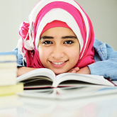
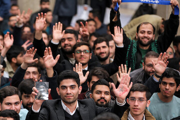
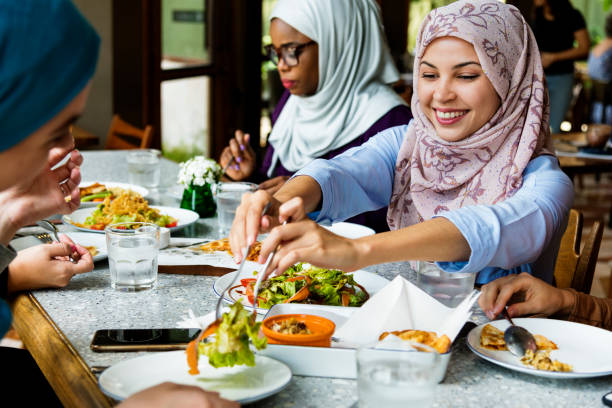
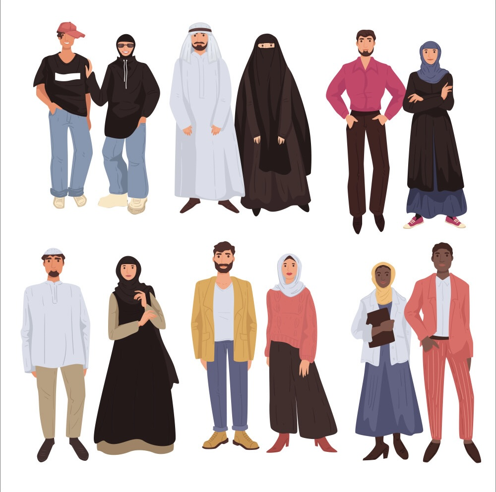

We believe in harmonizing faith with reason, encouraging critical thinking and informed decision-making in all aspects of life.
Education is a cornerstone of our community, with a strong emphasis on both religious and secular studies for all members.
We are committed to promoting social justice, equality, and the well-being of all individuals, reflecting the true essence of Islamic teachings.
The community members primarily speak the language of their homeland.
While Arabic serves as the cornerstone for religious studies.
English is embraced as a bridge to global engagement.
Cuisine holds a special place in our community, deeply intertwined with faith and tradition—they are acts of gratitude and unity. Whether in the warmth of majlis gatherings, the joy of mahfil celebrations, or the sacred moments of Iftar and Eid, food embodies our values of purity, hospitality, and togetherness.
Attire in our community reflects both modesty and cultural heritage, embodying the values of dignity and faith. Rooted in Islamic teachings, our dress aligns with the principles of haya (modesty) while embracing regional traditions. Our garments symbolize identity, devotion, and a connection to our rich legacy.
Women hold a place of high esteem within our community, inspired by the exemplary figures of Lady Khadija, Lady Fatima and Lady Zainab.
From the early days of Islam to the present, women have been instrumental in education, leadership, and social development.
We continue to emphasize the importance of women's education and empowerment, ensuring they have equal opportunities to contribute
to all facets of life.
In Islam, a woman is not obligated to bear financial responsibilities.
Before marriage, her father is responsible for fulfilling her needs, and after marriage, this duty falls upon her husband.
Household chores and childcare, including breastfeeding, are not her mandatory duties but acts of cooperation encouraged for harmony and family development. Islam grants women the freedom to make their own decisions, including the right to propose marriage with the guardian’s consent.
While men are commanded to fulfill all obligations, women are simply requested to contribute, even in smallest measure, ensuring a balanced & peaceful family life.